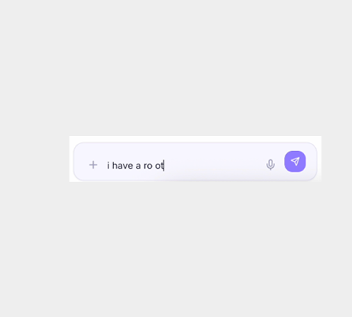
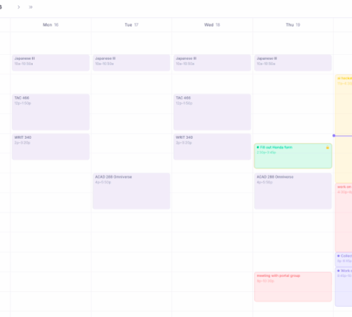
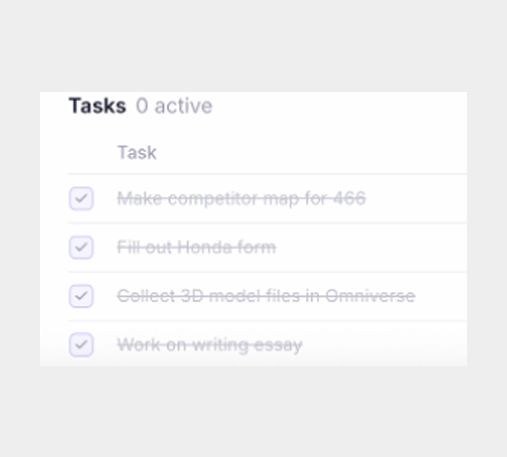

Think Out Loud
Say what's on your mind. We'll break it down into clear, simple steps.
- Text to speech functions
- Context-aware planning.

 sift
v
0
.
0
.
1
sift
v
0
.
0
.
1
Schedule and plan by providing a conversational environment that turns mental clutter into clarity.
Try Sift
Say what's on your mind. We'll break it down into clear, simple steps.


Turns clarified tasks into calendar time blocks to visualize your time.
A focused task dashboard that highlights what matters most

This is the best thing ever, solves all my problems.
Finally I can dump my brain and see my week without the chaos.
The voice input plus calendar blocks changed how I plan.
I used to forget everything. Now it’s all in one place and clear.
Sift turns messy notes into a schedule I can actually follow.
The focus view keeps me on track when everything is urgent.
Calendar sync and conflict detection save me every week.
I talk through my deadlines and sift turns them into blocks. So good.
Clarity without the overwhelm. Exactly what I needed.
One place for tasks and calendar. My brain can finally relax.
This is the best thing ever, solves all my problems.
Finally I can dump my brain and see my week without the chaos.
The voice input plus calendar blocks changed how I plan.
I used to forget everything. Now it's all in one place and clear.
Sift turns messy notes into a schedule I can actually follow.
The focus view keeps me on track when everything is urgent.
Calendar sync and conflict detection save me every week.
I talk through my deadlines and sift turns them into blocks. So good.
Clarity without the overwhelm. Exactly what I needed.
One place for tasks and calendar. My brain can finally relax.
sift is a conversational planning tool that turns mental clutter into clarity. You can think out loud, and we break it down into clear steps, calendar blocks, and a focused task view.
sift connects with Google Calendar and Apple Calendar. Clarified tasks become time blocks so you can see your week at a glance. We also help with availability and conflict management.
Yes. sift supports text-to-speech so you can think out loud. We use context-aware parsing to turn what you say into clear, actionable steps.
Yes. You can try sift for free to see if it fits your workflow.
Sign up for free, connect your calendar if you use one, and start adding tasks by typing or speaking. Your clarified items will show up in your calendar and focus view.
Take control of your schedule and try sift for free today.
Try Sift